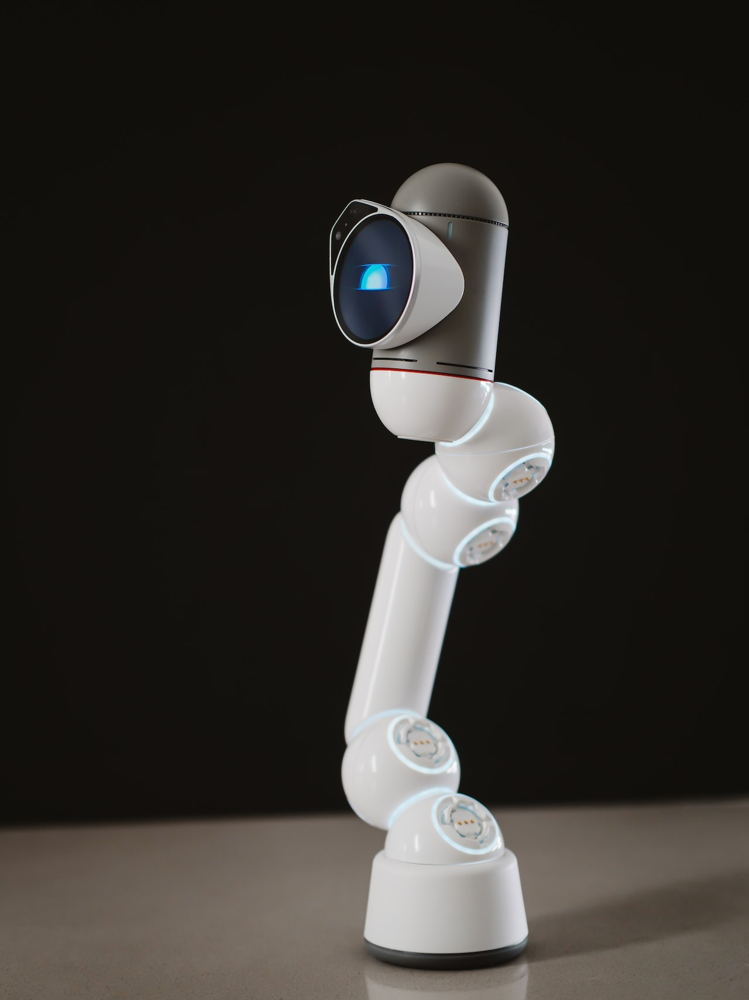

What is classified as an Iot device?
An IoT device all have 3 main components. They include objects that have senors, connectivity, and of course, the connectivity. These 3 components will be further explained below.
Sensors
Sensors have been around for over a century now but they were used in other variations in machinery. In IoT devices, sensors is crucial to its architecture. Sensors are able to detect its environment and react with the input given to it. Sensors have already made a major impact to quality, efficiency, safety of the objects they are attached to. There is a vast amount of sensors that are able to be configured on an IoT device. Such examples include atmospheric, proximity infrared, and pressure sensors. Without sensors, these machines are unable to collect data or respond without the aid of human interaction. 
Processing of Data
How will the sensors connected to the IoT device be accessible and able to exchange information?
The term is known as data processing. Data processing is collecting raw data and translating into
information that can be used. When a sensor responds to its environment, that data is collected and
processed. After the processing stage, the IoT device can respond in the manner of its intended use.
Data processing has shaped better accuracy, productivity, and made it easier to store and share data.
Data processing was a rough process during the early stages of the internet, now it straightforward development.

Connectivity
The most important thing in IoT devices is the connectivity. Connectivity allows data processing
information and communicate with platforms and other devices. There are various types of connectivity
that are used in all areas of IoT systems. Some examples include cellular data, Bluetooth,
Radio Frequency Identification (RFID), and most importantly, the internet. Other importances of
connectivity are cloud computing which stores and saves data, as well as authority to control devices
and their operations.